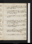
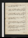
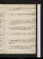
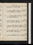

- About
- Diary
- People
- Events
- Reading
- Writing
- Meals
- Meetings
- Search

1828, Jan. 1. Tu.Commonwealth, p. 17. Livy, c. 30. Call on Lloyd(Agreemt of People) & M. 52 / 54
2. W.Commonwealth, çala. Livy, c. 34. Joshua Wilson & T C call: call, w. him, at Broderip’s: M W S & W dine. 51 ½ / 54
3. Th.Commonwealth, p. 181. Livy, c. 36. Museum; Vennere: call on E Poolen & Baldock: Wallace calls n. 54 / 56 / 52
4. F.Commonwealth, p. 182/2. Livy, c. 39. Museum; Standard Set Upe. Call on M. 50 / 52
5. Sa.Commonwealth, p. 184. Livy, c. 41. Killing no Murder. Snow. 48 / 50
Jan. 6. Su.Commonwealth, p. 185. Livy, Lib. XXVI, c. 5. H Payne calls: call on Booth & M. 48 / 50
7. M.Commonwealth, çala. Livy, c. 6. Write to L Dudley. Call on Kenney:cWhite calls: call on Colburn: theatre, Apollo Belvie. 47
8. Tu.Commonwealth, p. 186. Livy, 10. Museum; Grangere. 43? / 48
9. W.Commonwealth, p. 188. Livy, c. 14. Museum; H Ellise. Dine at Kenney’s, w. Sheridan Knowles, Planché, Liston, Miller & Powel; adv. Morton. 42 / 45
10. Th.Commonwealth, p. 189/2, & 1/2 page. Livy, c. 16. Museum; Violete. M W S & Dr Richards n call: meet O’Hanlon, Morton & Bannister. 41 ½ / 43 ½
11. F.Commonwealth, p. 190, & 1 page. Livy, c. 18. Museum; Violete. Snow. 41 ½ / 46 ½
12. Sa.Livy, c. 21. Call on A Hamilton (St Martin’s Library), Bain & Fitzstrathern. 45 / 50
Jan. 13. Su.Commonwealth, çala (Additional P & A). Livy, c. 24. Call on M W S: sup at Hodgets.’50 / 53 ½
14. M.Commonwealth, p. 192. Livy, c. 27. Dine at Hudson’s, Brompton: tea Joseph Jacob’s. 52 / 53
15. Tu.Commonwealth, p. 193. Livy, c. 30. Museum; MSse. Grandison, p. 640, fin. Snow. 50 / 48
16. W.Commonwealth, p. 195/2. Livy, c. 33. M W S & W dine; invité H Payne; adv. M. 47 / 50
17. Th.Commonwealth, p. 197/2. Livy, c. 38. Sup at Hodget’s, w. Bowring & miss Twamley. 48 ½ / 55
18. F.Commonwealth, p. 199. Livy, c. 40. Call on Northcote: Kenney sups. Museum; Investiture; Babere. Wellington Treasurye.54 / 60Letter from Lord Dudley
19. Sa.Commonwealth, p. 201/2. Livy, c. 44. 56 ½ / 61
Jan. 20. Su.Commonwealth, p. 202. Livy, c. 49. Aldis calls: dine at White’s, w. M J, Uwins, Hofland, West, Robinson & G White. 57 ½ / 59 ½
21. M.Commonwealth, p. 204/2. Livy, c. 51. Museum; Blakee: sup at Kenney’s, w. 4 Mortons, 2 Stevenses, Powel & Cooper. 55 / 58
22. Tu.Commonwealth, p. 205. Livy, Lib. XXVII, c. 5. Museum; Newspaperse. Call on Almosnino: N G calls: Hodgets sups. 56 / 57
23. W. [Greenhill.]Commonwealth, çala. Livy, c. 7. Call on M. Museum; Jas IIe. Theatre, Serf; adv. Este, Barhams , Cooper , M W S & H Paynee. 56 / 59 ½
24. Th.Commonwealth, çala. Livy, c. 10. Museum; Jas IIe. M calls: M W S & W dine. 55 ½ / 59
25. F.Commonwealth, çala. Livy, c. 14. Call on W Lamb & Rodd: meet S Knowles. Lady Caroline Lamb dies . 57 / 60
26. Sa.Commonwealth, p. 207/2. Livy, c. 17. Call on M W Sn. 56 / 59
Jan. 27. Su.Commonwealth, p. 208/2. Livy, c. 20. Call on W Lambna & Kenney: M calls twice. 54 / 59 ½
28. M.Livy, c. 23. Call on Birkbeck & Millna: Museum; Newspaperse. Theatre, Black Prince; adv. Barhams & O’ Hanlone. 53 / 52
29. Tu.Commonwealth, p. 209/2. Livy, c. 27. Museum; Fairfaxe. M calls. Parliament meetse.52 / 54 ½
30. W.Commonwealth, p. 212/2. Livy, c. 30. O Turner calls: M W S & W dine. 52 ½ / 55
31. Th.Commonwealth, p. 214/2. Livy, c. 35. M Jones dines: theatre, Critic, & Haunted Inn; adv. T Ce. 52 / 56
Feb. 1. F.Commonwealth, çala. Livy, c. 39. Museum; C’s Lordse: meet H Robinson: sup at Reynolds’s, w. Kenney. 55 ½ / 60
2. Sa.Commonwealth, çala. Livy, c. 40. Call on Northcote. 57
Feb. 3. Su.Commonwealth, p. 216. Livy, c. 46. Call on M W S: T C, M & W sup. 53 / 59
4. M.Commonwealth, çala. Livy, c. 51. Museum; C’s Lordse. Meet Bryant. 54 / 58
5. Tu.Commonwealth, p. 218/2. Livy, Lib. XXVIII, c. 6. Museum; Hartlibe: theatre, Merchant’s Weddinge. J T Rutt calls. 56 ½ / 59
6. W.Commonwealth, p. 219. Livy, c. 10. Museum; Hartlibe. M W S dines; adv. W. 57 / 61
7. Th.Commonwealth, p. 220. Livy, c. 14. Museum; C’s Speeche. Mrs Hamilton dines: call on Hodgetsn. 57 / 59
8. F.Commonwealth, çala. Livy, c. 18. Museum; Newspaperse. City Match. 56 / 59 ½
9. Sa.Commonwealth, p. 222. Livy, c. 22: Match at Midnight. 53
Feb. 10. Su.Commonwealth, çala. Livy, c. 26. Call on W Lamb: dine at Bryant’s, w. Mrs B. 50
11. M.Commonwealth, p. 225/2. Livy, c. 30. Sup at Hodgets’, w. miss Twamley. Snow. 45 / 46
12. Tu.Commonwealth, p. 226/2. Livy, c. 34. Museum; Newspaperse. M calls. 44 / 45
13. W.Commonwealth, çala. Livy, c. 39. Museum; State Trialse. M W S dines; adv. W. 43 / 45
14. Th.Commonwealth, p. 229. Livy, c. 42. Wit without Money, acts 1, 2. Daniel Lister dies, aged 86. 43 ½ / 47
15. F.Commonwealth, çala. Livy, c. 44. Museum; Carte, Letterse. Wit without Money, fin. 44 ½ / 53
16. Sa.Commonwealth, p. 229 bis. Livy, c. 46. Love’s Labour Lost, act 1. Meet Jas Heath. 47 / 50
Feb. 17. Su.Commonwealth, p. 230. Livy, Lib. XXIX, c. 3. Love’s Labour Lost, acts 3, 2, 4. Call on M W S. 46 / 49
18. M.Commonwealth, 16 lines. Livy, c. 6. Museum; Newspaperse. M at tea c. Theatre, W Tell, & 1/2 Young Juane. 45 ½ / 49
19. Tu.Commonwealth, p. 232/2. Write to W Lamb. Livy; c. 10. Museum; Carte, Letterse. Meet Withers: theatre, Somnambuliste. 47 ½ / 54 ½
20. W.Commonwealth, p. 234. Livy, c. 16. Call on Booth : M W S dines; adv. H Payne. 50 ½ / 55 ½
21. Th.Commonwealth, p. 236. Livy, c. 20. Museum; State Trialse: meet J Taylor; calls: sup at Hodgets’.52 / 56
22. F.Commonwealth, 11 lines. Livy, c. 26. Museum; Newspaperse. Meet Morton: Kenney sups. 52 ½ / 56
23. Sa.Commonwealth, p. 238. Livy, c. 29. Call on Northcote. 53 / 54
Feb. 24. Su.Commonwealth, çala. Livy, 30. J M Morgan calls: meet Reynolds & Kenney. 51 / 55
25. M.Commonwealth, çala (conclusion of Vol., outline). Livy, c. 33. Museum; B[o?]tteley, &ce. 54 ½ / 60
26. Tu.Commonwealth, p. 240. Livy, c. 38. Museum; Dumonte. F Reynolds junrn & N G call. Love’s Labour Lost, act 5. 57 ½ / 62
27. W.Commonwealth, p. 241. Livy, Lib. XXX, c. 6. Museum; Dumonte. Midsummer Night, act 1, 2. M W S, H Payne & M dine; adv. Whitena. 56 / 61
28. Th.Commonwealth, çala. Livy, c. 10. Museum; Dumonte. Call on Coates, L Uni: theatre, 7/10 Overreach, & Invincibles; adv. J Taylore. 58 / 60
29. F.Commonwealth, p. 243/2. Livy, c. 13. Burning Pestle, acts 1, 2. Call on F Reynolds. 56 / 60
Mar. 1. Sa.Commonwealth, çala. Livy, c. 19. Theatre, Poor Gentlemane. 55 / 56 ½
Mar. 2. Su.Commonwealth, p. 245. Livy, c. 26. Call on M W S; adv. miss Figg & miss Robinson: tea Bryant’s, w. Ralph Milner. 55 / 57
3. M.Commonwealth, p. 246/2. Livy, c. 30. Museum; Dumonte. Tea Kenney’s, w. Listons, 4 Mortons, Cooper & W. Burning Pestle, fin. 53 / 55 ½
4. Tu.Commonwealth, p. 247. Livy, c. 36. Museum; Dumonte. 54 / 58
5. W.Commonwealth, çala. Livy, c. 42. Broderip’s, w. M J & M W S; adv. Matthewses: M W S dines; adv. Kenneys, mrs Hamilton & White. Flakye. 54 / 57 / 50
6. Th.Commonwealth, p. 248. Livy, c. 45; Lib. XXXI, c. 5. Museum; Newspaperse. Snowy.48 ½ / 56 / 50
7. F.Commonwealth, çala. Livy, c. 10. Museum; General Morgane. Midsummer Night, fin. 47 ½ / 50
8. Sa.Commonwealth, p. 250. Livy, c. 15: Timon, act 1. 55 / 59
Mar. 9. Su.Commonwealth, p. 253. Livy, c. 20: Timon, acts 1, 2, 3. Call on M W S. 56 / 59
10. M.Livy, c. 25. Mathews, Gallery, w. M W S & miss Robinsone: theatre, Don Pedro; adv. Gent & Wallacee. 57 / 59 ½
11. Tu.Commonwealth, p. 256. Livy, c. 28. Museum; York, Memoirse. Call on M W S: F Reynolds calls. 56 / 60
12. W.Commonwealth, p. 259/2. Livy, c. 32. Museum; Carringtone. M W S & W dine. 56 ½ / 59
13. Th.Commonwealth, p. 262/2. Livy, c. 37. Museum; Prestwiche. Dine at Bryant’s; adv. Ralph Milner. Hodgets sups. 58 / 64
14. F.Commonwealth, p. 264. Livy, c. 41. Museum; Baxtere. Tea Kenney’s, w. Listons, Proctor, Newton, Morton, Russel, R Reynolds & Powel. 59 ½ / 65
15. Sa.Commonwealth, p. 265, & 1/2 page. Livy, c. 43. Call on Mrs Booth : theatre, Frolics in Francee. 60 / 66
Mar. 16. Su.Commonwealth, p. 267. Livy, c. 45: L Hunt, p. 66. Call on M W S. 60 / 64
17. M.Livy, c. 50. L Hunt, p. 304. Write to Joseph Jacob. 61 ½ / 64
18. Tu.Commonwealth, p. 271/2. Livy, Lib. XXXII, c. 7. Northcote calls: sup at Reynolds’s, w. Edw. Morton & S Boaden. L Hunt, p. 409. 60 / 66
19. W.Commonwealth, p. 274/2. Livy, c. 13: L Hunt, p. 513, fin. Museum; Carringtone: call on Northcote. 58 / 63
20. Th.Commonwealth, p. 277. Livy, c. 19. Rule a Wife. 55 ½ / 60
21. F.Commonwealth, p. 280. Livy, c. 23. Museum; Prestwiche. Booth calls: Kenney & Hudson at tea. Troilus, acts 1, 2, 3. 55 ½ / 60
22. Sa.Commonwealth, 1 page. Livy, c. 28. Sup at Hodgets’, w. 5 dos, C & G Twamley, & miss Vigors. 52 ½ / 58
Mar. 23. Su.Commonwealth, 3 pages. Livy, c. 33. M W S, P & W call: dine at Bryant’s, w. mrs B; adv. Milner & Creed. 51 / 58
24. M.Commonwealth, 2 pp. Livy, c. 40. Museum; W Delle. Troilus, acts 4, 5. 51 / 57

25. Tu.Commonwealth, 2 pp. Livy, Lib. XXXIII, c. 6. Museum; Webstere. Antony, act 1. 52 / 56
26. W.Commonwealth, 2 pp. Livy, c. 13. Museum; Woode. Antony, act 2. M W S & W dine. 49 / 54
27. Th.Commonwealth, 1/2 page; revise. Livy, c. 17. Museum; Woode. Antony, act 3. Theatre, 1/2 Artaxerxes, & Late for Dinnere. Percy to Slatere. 51 ½ / 57
28. F.Commonwealth, revise. Livy, c. 24. Antony, acts 4, 5. Call on Bryant. 53 / 57
29. Sa.Commonwealth (Milton), 3 pp. Livy, c. 30. M at tea; adv. N G: Kenney sups. 51 / 56
Mar. 30. Su.Commonwealth, 2 1/2 pp. Livy, c. 36. Hazlit, Napoleon, p. 66. Call on M W S. 51 / 55
31. M.Commonwealth, 2 1/2 pp. Livy, c. 41. F Reynolds calls: tea Joseph Jacob’s, w. 3 Joneses. 51 / 56 ½
Apr. 1. Tu.Commonwealth, 2 1/2 pp. Livy, c. 45. Museum; Angleseye. Hazlit, p. 110. 50 ½ / 56
2. W.Commonwealth, 2 1/2 pp. Livy, c. 49. Museum; Excisee. Hazlit, p. 147. M W S dines. 52 / 56
3. Th.Commonwealth, 3 pp. Livy, Lib. XXXIV, c. 7. Call on O’Hanlon, Bedel, & M W S ; adv. H Payne. Hazlit, p. 176. 52 / 54
4. F.Commonwealth, 3 1/2 pp. Livy, c. 12. Dine at Bryant’s; adv. Milner. Hazlit, p. 187. 50 ½ / 53
5. Sa.Commonwealth, 4 pp. Livy, c. 18. Hazlit, p. 242. 50 / 55
Apr. 6. Su.Commonwealth, 2 pp. Livy, c. 24: Hazlit, p. 351. Call on M W S; adv. Dillon & Skene. 53 / 57
7. M.Commonwealth, revise. Livy, c. 31: Hazlit, p. 415. Call on Smith, printsr, & Rodd ; adv. Boaden: sup at Reynolds’s; adv. Watt. W, Dyer’s Buildingse. 53 ½ / 57
8. Tu.Commonwealth, revise. Livy, c. 37. Hazlit, p. 444. Call on L Kenney, for M W S. 53 / 57
9. W.Commonwealth, revise. Livy, c. 42. Meet O Rees: M W S & P dines; adv. W & Howard Payne. 54 / 59
10. Th.Commonwealth, revise. Livy, c. 48: Hajji Baba, p. 122. Call on Northcote. Giddinesse. 56 ½ / 60
11. F.Commonwealth, revise. Livy, c. 56: Hajji Baba, p. 272; Vol. II, p. 42. Descent from Cross, Waxworke. Call on Kenney; adv. F Ht. M W S for Francee. 56 ½ / 62
12. Sa.Commonwealth, revise. Livy, c. 62: Hajji Baba, p. 241. Call on Proctorn. 58 / 64
Apr. 13. Su.Commonwealth, revise. Livy, Lib. XXXV, c. 5: Hajji Baba, p. 334. 60 / 64
14. M.Coleridge. Livy, c. 12. Museum; Newspaperse. Hajji Baba, p. 403; Vol. III, p. 142. Northcote calls. 59 / 63
15. Tu.Commonwealth, revise. Livy, c. 16. Hajji Baba, p. 387, fin. Theatre, 1/2 Rosetta, & Race for Dinnere. 59 / 62 ½
16. W.Rochester, çala. Livy, c. 25. 59 / 62 ½
17. Th.Commonwealth, 1 1/2 pp. Livy, c. 33. F Reynolds calls: theatre, Love for Love; adv. Skeffington & Millere. 59 / 62 ½
18. F.Commonwealth, 7 lines. Livy, c. 39: Grammont, p. 36. 58 ½ / 61
19. Sa.Commonwealth, 2 pp. Livy, c. 47. Grammont, p. 126. 58 / 61
Apr. 20. Su.Commonwealth, 1 page. Livy, c. 51: Grammont, p. 178: Walpoliana, Vol. I. Call on Booth. 58 / 61
21. M.Commonwealth, 4 lines. Livy, Lib. XXXVI, c. 6: Grammont, p. 212. 56 ½ / 59
22. Tu.Approach. Rochester. Livy, c. 13: Grammont, p. 262. Call on Ade. 55 / 56
23. W.Commonwealth, revise. Livy, c. 19: Grammont, p. 312. Letter to Putland. Call on Hornern & Colburnn. 55 / 58
24. Th.Commonwealth, revise. Livy, c. 26: Grammont, p. 352. Wallace calls n. 57 / 62 ½
25. Sa.eCommonwealth, revise. Livy, c. 34: Grammt, p. 392. Call on Horner: sup C Jones’s, w. Aldis, Selby Hele, Wrights, captain Martin, Barnet, & 95. 59 ½ / 63
26. Sa.CoLivy, c. 35: Grammont, p. 426. fin. Call on W n: theatre, Point of Honour, & Little Offsprings; adv. Barhame. 59 ½ / 65
Apr. 27. Su.Commonwealth, revise. Livy, c. 41: Marvel, çala. Northcote calls: dine at Bryant’s, w. mrs B & son. 59 / 65
28. M.Livy, c. 45: Marvel, çala. Call on Percy (Slater’s): F R calls n: W dines: sup at Reynolds’s; adv. Watt. 61 / 66 ½
29. Tu.Livy, Lib. XXXVII, c. 4: Marvel, çala. Museume. N G calls: call on Colburn, & Northcote ; adv. Cawse. Write to M W S. 63 / 69
30. W.Commonwealth, revise. Livy, c. 7. M, White, R Taylor & W call: call on Ade & Hodgetsn: meet Vt Dillon. Go to press. 65 ½ / 67
May 1. Th.Commonwealth, revise. Livy, c. 10. Museum; adv. Rutt (treason)e. F R calls n: meet Landseer: call on Wright, Berners Street. 62 ½ / 65
2. F.Commonwealth, revise. Livy, c. 13: Sterne, çala. Call on Kenney & Spy Cooper: meet Batty & F R. 60 / 63
3. Sa.Commonwealth, revise. Livy, c. 16: Sterne, çala. J F // Cooper & Clarke call: meet F R: theatre, Roses & Thorns, & School for Gallantry; adv. Skeffingtone60 / 62
May 4. Su.Commonwealth, revise. Livy, c. 19: Sentimental Journey, fin. Uwins calls: W dines. 60 / 64 ½
5. M.Commonwealth, revise. Livy, c. 22: Shandy, p. 186. Peckham House, w. Uwins & M J: Exhibition; adv. Russele. Broken Shin, 3 dayse. 61 / 64
6. Tu.Commonwealth, revise. Livy, c. 25: Shandy, p. 228. Museum; Treatiese. 59 ½ / 62
7. W.Commonwealth, revise. Livy, c. 30. Museum; Treatiese. Shandy, Vol. II. 58 / 61
8. Th.Commonwealth, 1 1/2 pp; revise. Proof. Museum; Treatiese. Shandy, Vol. III, 80: O’Hara, p. 48. 59 / 62
9. F.Commonwealth, revise. Livy, c. 37. Museum; Treatiese. Shandy, p. 248: O’Hara, p. 98. Seek Coates. 58 / 62
10. Sa.Commonwealth, 2 pages. Livy, c. 42: Shandy, Vol. IV, p. 90: O Hara, p. 148. Seek Beauchamp: call on Hodgetsn. Muhlenfels elected, L Ue. 60 / 64
May 11. Su.Commonwealth, revise. Livy, c. 45: O Hara, p. 200. W calls: dine at Bryant’s, w. Chas B. 62 / 64 ½
12. M.Commonwealth, revise. Write to M W S. Livy, c. 52: O Hara, p. 228. Seek Horner: Sotheby (Jews): Museum; Gerarde: theatre, Point of Honr, act 3e: M calls.Hodgets calls n. Catholic Emancipation, 272 to 266e. 61 / 65 ½
13. Tu.Commonwealth, revise. Livy, c. 54: O’Hara, p. 274. Museum; Gerarde: tea Wright’s, w. Thomases & Fielding. Call on Hornerna. 59 ½ / 64 ½
14. W.Commonwealth, revise. Livy, c. 61. Call on C Bryant & C Jonesn: F R calls: theatre, Shrew; adv. Skeffington, Wallace & O’Hanlone. 61 / 65 ½
15. Th.Proof. Canongate, Part II, p. 158. Call on Birkbeck & Ade: W breakfasts: Uwin sups. 61 ½ / 66
16. F.Livy, Lib XXXVIII, c. 6: Canongate, p. 336. Breakfast, Reynolds’s, w. Scott, Wordsworth, Luttrel, Burnel, Kinnaird & C Heath; invités Normanby & The. Hooke: call on Hornern: Lodge, Portraitse. 65 / 70
17. Sa.Commonwealth, revise. Livy, c. 11: Shandy, p. 224: Canongate, Vol. II, p. 78. Call on Hornern, & Taylor, P S: meet Poole. 65 ½ / 68
May 18. Su.Commonwealth, revise, & 1 page. Livy, c. 15: Canongate, p. 212. Call on J F Cooper. 65 / 69
19. M.Commonwealth, revise. Livy, c. 19: Canongate, p. 336. L Ky & W calls: call on Muhlenfels; adv. Prati: Martin’s Ninevehe. 64 / 68
20. Tu.Commonwealth, revise. Livy, c. 24: Canongate, Vol. III, p. 56. Museum;Gerarde: tea Jacob’s; stage, H Rodd & femme. 62 ½ / 65
21. W.Commonwealth, revise. Livy, 25: Canongate, 176. Trelawney calls: call on Taylor (P S), Coates & Hodgetsn. Last page of Chapter VIII. 62 / 65
22. Th.Commonwealth, revise. Livy, c. 32. Museum; Gerarde. Canongate, p. 348. Hodgets sups. 63 / 65
23. F.Proof. Call on C Bryant: theatre, 1/3 Artaxerxes, & Somnambuliste. 62 / 64 ½
24. Sa.Vane, &c. Livy, c. 36: O’Hara, p. 367. Seek Horner. 63 / 68
May 25. Su.Commonwealth, revise. Livy, c. 38: Shandy, Vol. V, p. 105. W sups. 64 / 67
26. M.Write to Shipbourn. Livy, c. 43: Shandy, p. 222; Vol. VI, p. 68. F R calls: sup at Reynolds’s. Huskisson resignse. 64 / 67
27. Tu.Commonwealth, revise. Livy, c. 49. Ancient Masters, w. W & Thrupp; adv. Northcote, J Taylor & Gente: call on Bain: theatre, Ups & Down.eDudley resignse.65 / 68
28. W.Commonwealth, revise. Livy, c. 54: Shandy, p. 205, fin. Vision of Josephe: call on Horner & Taylor. 64 / 67
29. Th.Commonwealth, 1 1/2 pp. Livy, c. 60. Call on C Bryant: dine at Hodgets’s, w. Errington, Bowring, 2 R Ts & wife, Hodgets senr & Booth: N G calls n. 64 / 67
30. F.Commonwealth, revise. Livy, bis. Call on Northcote: W calls. Bien, 2 dayse. 65 / 69
31. Sa.Commonwealth, revise. Livy, Lib. XXXIX, c. 4. Theatre, Carron Side; adv. Spencere. 65 ½ / 67
[fol. 12v] June 1. Su.Livy, c. 12: Reynolds, Discourses, 1,
2: Buchanan, çala. C Bryant & W call: call on
Booth: mrs Hamilton sups. 64
½ / 68 ½
2. M.Commonwealth, 1 1/2 pp. Livy, c. 19: Reynolds, Discourse 3. Museum; M Reviewe. 65 ½ / 67 ½
3. Tu.Proof. D’Israeli, çala. 64 / 67 ½
4. W.Commonwealth, revise. Livy, c. 26. Museum; Hallame. D’Israeli, çala. Meet Hippisley. 64 ½ / 67
5. Th.Commonwealth, revise; 1 page, C & Lambert . Livy, c. 32. Museum; Hallame. 62 ½ / 65
6. F.Commonwealth, 2 1/2 pp. Livy, c. 38: D’Israeli, p. 294. Biene. 63 / 65
7. Sa.Commonwealth, 1/2 page; revise. Livy, c. 44: D’Israeli, p. 355. Call on Taylor, P S: meet Hippesley & Spyring. 61 ½ / 63 ½
June 8. Su.Commonwealth, revise. Livy, c. 50: D’Israeli, Vol. II, p. 81. Call on L K, w. M J: meet Norton (75), H P & Reynolds. 61 / 65
9. M.Commonwealth, revise. Livy, c. 56. Exhibitione: W calls, & Poolen: Kenney at tea, sups. 63 ½ / 67
10. Tu.Commonwealth, revise. Livy, Lib. XL, c. 7: D’Israeli, p. 139. 64 / 67
11. W.Commonwealth, 1 page; revise. Livy, c. 11: D’Israeli, p. 214. Call on L K; adv. F Ht: sup at Reynolds’s. Dugald Stewart dies . 65 / 68 ½
12. Th.Proof. D’Israeli, p. 267. Breakfast at Reynolds’s, w. Nugent, Normanby, Morpeth, Coleridge, Wordswth, Bernal & Jerdan; invité T Moore & T Campbel. 65 ½ / 67
13. F.Commonwealth, 1 1/2 pp. Livy, c. 15. Museum; Hastede. D’Israeli, p. 292. W calls: seek D’Israeli. 65 ½ / 69
14. Sa.Commonwealth, revise. Livy, c. 24: D’Israeli, p. 346, fin. 65 / 70
June 15. Su.Commonwealth, revise. Livy, c. 30. Dine at Rowbotham’s, w. 3 Bells, Lissaburra, Hector & Cameron; adv. Francia: W dines: meet Kenney. 66 / 70
16. M.Commonwealth, revise. Livy, c. 35. Museum; Selwoode. L K & L Ht call: call on S Hodgetsn. Wordsworth & F R call. 67 / 67 ½
17. Tu.Commonwealth, revise. Livy, c. 40. Museum; Newspaperse: Call on Taylor, G S: theatre, Barber of Seville; adv. Skeffington & Wallacee: M sups. 66 ½ / 70
18. W.Commonwealth, revise. Livy, c. 47. Museum; Grangere. J Cæsar, act 1, 2. Call on Northcote. 65 ½ / 68 ½
19. Th.Commonwealth, revise. Proof. Museum; Blakee. W calls. Letter from C C. J Cæsar, act 3. 65 ½ / 69
20. F.Commonwealth, revise. Livy, c. 53: J Cæsar, act 4, 5{.}Museum; Campbele. Seek Beauchamp: call on Poolen. Burke, Sublime, p. 32. 67 / 66
21. Sa.Commonwealth, revise. Livy, c. 59, fin. Call on C Bryant, & Williams & Powel: W dines. Burke, p. 62. 66 / 67

June 22. Su.Perpetual showers. Virgil, Æneis, 211: Life of Burke, p. 152. Call on Booth. 64 ½ / 67
23. M.Commonwealth, revise. Virgil, v. 405. Museum; Burchete. W calls: call on Brooks (W & P): theatre, Sweethearts & Wivese. 64 / 67 ½
24. Tu.Commonwealth, revise. Virgil, v. 616. Museum; Long; adv. Hone & Barnhame: meet Kenney & Cooper, D L: Jas White & Isa Booth call. 66 / 69 ½
25. W. Coach, through Sevenoaks, Tunbridge, Tunbridge Wells & Battle: sleep at Hastings, M W S, P, & Julia Robinson: break down, 1 mile beyond Sevenoakse.[Not in London]
26. Th.Guzla, by Prosper Merimée: Carvajal, by do: Granby, p. 86.[Not in London]
27. F.Write to M J & rev. Tho. Brown. Granby, p. 324, & Vol. II. Call on Dr Knox.[Not in London]
28. Sa.Granby, Vol. III, p. 134: Jaquerie, p. 50. Sail.[Not in London]
June 29. Su.Granby, p. 330, fin: Jaquerie, p. 154. F R at tea.[Not in London]
30. M.Gilbert Earle, p. 100. Robinson arrives to breakfast: boat, w. F R, Robinson, &c.[Not in London]
July 1. Tu. Coach, through Tunbridge Wells, as before: tea Gower Place: Poole sups. 73[Not in London]
2. W.Commonwealth, revise. Proof. Museum; Longe. Life of Burke, p. 186. 71 / 74
3. Th.Commonwealth, revise. Virgil, v. 760. Museum; Longe. W dines: call on Colburn{.}N G at tea. Call on Colburn, on Vol. V. 71 / 76
4. F.Commonwealth, revise. Write to M W S. Virgil II, 107: Life of Burke, p. 232. 73 ½ / 75 ½
5. Sa.Commonwealth, 1 page; revise. Virgil, 267. Call on Powel (W, B & P), & C Bryant: sup at Reynolds’s, w. Fallowfield & Helen Boaden. O’Connel electede.72 / 74

July 6. Su.Commonwealth, revise. Virgil, v. 369. Life of Burke, p. 298. W dines. 70 / 71
7. M.Commonwealth, revise. Virgil, v. 485. Museum; Morlande. Slater calls: Kenney au soir, & W. 67 ½ / 70 ½
8. Tu.Commonwealth, 1 page; revise. Virgil, v. 622. Museum; Dumonte. Life of Burke, p. 380. 69 / 75
9. W.Commonwealth; revise. Virgil, v. 804. Museum; Titles of Honoure. W calls. 70
10. Th.Commonwealth, revise. Virgil, Lib, III, v. 101: Life of Burke, p. 426. Call on Northcote, Lodge (adv. Nicholas & Spurrier), & D’Israelin: W dines. 65 ½ / 70
11. F.Commonwealth, 1/2 page. Virgil, v. 215. Life of Burke, p. 462. D’Israeli calls: call on M: C C & family, & W dine. C C in Englande. 68 / 70.
12. Sa.Commonwealth, revise. Write to M W S. Virgil, v. 314. Cts at tea. 67 / 68
July 13. Su.Commonwealth, revise. Virgil, v. 402. Life of Burke, p. 510: Cts & W dine; adv. Kenneys, & M. 64 / 66
14. M.Commonwealth, revise. Virgil, v. 505. Museum; Newspaperse. Call on C Bryantn: theatre, Noyadese. 64 / 66
15. Tu.Commonwealth, revise. Virgil, v. 654. Museum; Newspapers; adv. D’Israelie. Life of Burke, p. 565, fin. 64 / 66
16. W.Commonwealth, revise, Virgil, v. 716. Museum; Newspaperse. Call on C Bryant: H P, Hudson & Cts sup. 63 / 68 ½
17. Th.Commonwealth, revise. Virgil, Lib. IV, v. 128. Museum; Newspaperse. Walter Wilson calls: theatre, Two Friendse. 66 / 70
18. F.Commonwealth, revise. Proof. Museum; Loyal Songse. Call on Lodgen. Burke, Reflections, p. 58. 67 ½ / 70
19. Sa.Commonwealth, 1 page; revise. Virgil, v. 303. Mn & Grayson call: theatre, Bottle Impe. 67 / 69
July 20. Su.Commonwealth (beginning of Chap. 18), 4 pp. Virgil, v. 401. Call on Booth, w. C C: Cts & W sup. 65 ½ / 68
21. M.Viscerae. Commonwealth, revise. Virgil, v. 503. Museum; Jews; adv. Nicholase. Behemoth, p. 80. Hampden disinterrede. 65 ½ / 69
22. Tu.Commonwealth, p. 5; revise. Virgil, v. 603. Museum; Jewse. Cts dine: call on Colburn n: M calls: call on Northcote. Melbourne dies, 88 . 64 / 69
23. W.Commonwealth, revise. Virgil, v. 705. Museum; Toveye. Call on Colburn. 66 / 69
24. Th.Commonwealth, revise. Virgil, Lib. V, p v. 113. Museum; Vaydese. Theatre, Lies like Truthe. 66 / 68 ½
25. F.Commonwealth, revise. Behemoth, p. 124. Museum; Sampsone. Call on Davison, M & C Bryant (the will): sup at Reynolds’s. 66 ½ / 69
26. Sa.Commonwealth, revise. Virgil, v. 209. M breakfasts: call on Taylor, bookseller, w. C C. 67 / 68
July 27. Su.Commonwealth, 1 page; revise. Write to Colburn. Virgil, v. 317: C Borgia, acts 1 & 2. Cts dine. 65 ½ / 67 ½
28. M.Call, w. C C, on Birkbeck, Rowbotham, & Bryantn: G Dyer calls n: Percy dines & sleeps: adv{.} W: call on Hodgetsn. Virgil; v. 484. Parliament proroguede.64 / 67 ½
29. Tu.Commonwealth, revise. Virgil, v. 603. Museum; Vanee. M breakfasts: M, Percy & Cts ; adv. N G, & E & Julian: theatre, Tit for Tat; adv. Hill & Gente. Alexia Hume dies .64 / 67
30. W.Commonwealth, revise. Virgil, v. 761. Call on Horner, w. C C: seek L Nugent. National Gallery. 61 ½ / 65
31. Th.Commonwealth, revise. Proof. C Borgia, fin. Call on L Nugentn & J Taylor. 62 / 67
Aug. 1. F.Commonwealth, revise. Virgil, v. 871: Behemoth, p. 140. Call on C Bryant: M calls. meet Graham. Write to L Nugent. 64 / 66
2. Sa.Commonwealth, revise. Virgil, Lib. VI, v. 76. Behemoth, p. 169. Theatre, Rivalse. 65 / 66
Aug. 3. Su.Commonwealth, revise. Proof. Call on Booth & R Taylorn (Vaydes). Biene. 64 ½ / 67 ½
4. M.Commonwealth, revise. Virgil, v. 235. Kenney & Hippesley call. 65 / 69
5. Tu.Commonwealth, revise. Virgil, v. 397. Museum; G Foxe. Call on Northcote. 65 / 68 ½
6. W.Commonwealth, 1 1/2 pp. Biddle. Museum; doe. Virgil, v. 534. Rowbotham & Cts dine. Viscerae. 64 ½ / 68.
7. Th.Commonwealth, 1 page; revise. Virgil, v. 636. Museum; Biddlee. M calls: call on C Bryantna. Biene. 66 / 68 ½
8. F.Call on Davison, Dixon & E Poolena: tea Kenney’s, w. Mortons, Dawe, Mergez & femme, mrs Hunt & Cts. M J. 67 / 69 ½
9. Sa.PCommonwealth, revise. Proof. W calls: meet F R & Wright. 66 ½ / 68 ½
Aug. 10. Su.Commonwealth, 1 1/2 pages. Virgil, v. 760. M W S, Cts & E Poole call. 65 / 68 ½
11. M.Commonwealth, revise. Virgil, v. 853. Museum; Newspaperse. W calls. 65 ½ / 68 ½
12. Tu.Commonwealth, revise. Virgil, v. 901; Lib. VII, v. 91. Museum; MSSe. M W S & Cts dine; adv. M: sup at Reynolds’s. Dawson’s Speech at Derrye.64 / 68 ½
13. W.Commonwealth, revise: arrange Ch. XXIII. Virgil, v. 248: Warbeck, p. 47. Call on Uwins, on w. C C. 64 / 65 ½
14. Th.Commonwealth, revise. Virgil, v. 384. L Nugt calls n: call on C Bryant. 64 / 65 ½
15. F.Commonwealth, revise. Virgil, v. 474. Museum; Horse-powere. Crohookre, Part II. Giddinesse.62 / 67
16. Sa.Commonwealth, revise. Virgil, v. 582: Warbeck, p. 134. Call on W Tooken, w. C C. 61 ½ / 67
Aug. 17. Su.Commonwealth, 2 pp. Virgil, v. 677: Warbeck, p. 155. W calls: dine at Bryant’s, w. mrs B; adv. Dunbar. 65 / 68
18. M.Commonwealth, revise. Proof. Museum; Smollet & Macaulaye. Warbeck, p. 167. M W S & Cts at tea. 64 / 68 ½
19. Tu.Commonwealth, revise. Virgil, v. 732. Dawe calls. call on Haselwood: theatre, Green Eyed Monstere. 63 / 67 ½
20. W.Commonwealth, 2 pages. Proof. White & C C dine; adv. M W S. 64 / 69 ½
21. Th.Commonwealth, revise. Virgil, v. 817; Lib. VIII, v. 65. Museum; Flagellume. W & Cts sup. 65 / 67
22. F.Scouringe. Commonwealth, revise; 1 page (Harrison). Virgil, v. 212. Museum; Standard Set Upe. W calls: call on Bryant. 64 / 66
23. Sa.Commonwealth, 2 1/2 pages. Virgil, v. 336. Theatre, Not for Me; adv. Twamleye: M at tea.Perfect Health, 8 dayse.63 / 65
Aug. 24. Su.Commonwealth, 2 pages. Proof. Dine at White, w. C C & Hunt: Kenney calls n. 62 / 69
25. M.Commonwealth, revise. Proof. L K calls: M W S dines. 67 / 72 ½
26. Tu.Commonwealth, revise. Virgil, v. 474. Letter to Dudley. 67 ½ / 71 ½
27. W.Commonwealth, revise. Virgil, v. 607. Call on Mrs Hunt. 65 / 72
28. Th.Commonwealth, revise. Write to L Dudley. Virgil, v. 731. L Hunt calls: theatre, Miss Wrighte. 66 / 74
29. F.Commonwealth, revise. Proof. Museum; Symonds MSe. M W S at tea. 67 / 71
30. Sa.Commonwealth, revise. Virgil, Lib. IX, v. 175. M at tea. 67 ½ / 70
Aug. 31. Su.Commonwealth, revise. Proof. Dine at Robinson’s, Park Cottage, w. miss Shaw & M W S. W calls. 66 ½ / 67
Sep. 1. M.Commonwealth, revise. Write to Bryant. Virgil, v. 313. Museum; W D Fellowese. Hodgets sups. 65 / 67
2. Tu.Commonwealth, revise. Virgil, v. 458. Museum; Ushere. Tea at L Hunt’s: N G calls n. 65 ½ / 69 ½
3. W.Commonwealth, revise, 2 pages{.} Virgil, v. 548. Museum; Ushere. M W S, Cts & W dine. 64 ½ / 67
4. Th.Commonwealth, 1 page; revise. Virgil, v. 665. Museum; Coxe. sup at Reynolds’s, F R, w. S & H Boaden. 65 / 69 ½
5. F.Commonwealth, 1 page. Virgil, v. 818. M W S at tea. 65 / 70.
6. Sa.Commonwealth, 1 page. Proof. Uwins call: call, w. C C, on Coates: theatre, Pirate of Genoae. 65 / 69
Sep. 7. Su.Commonwealth, revise. Proof. Call on Northcote. Sultry. 66 / 70
8. M.Commonwealth, revise. Virgil, Lib. X, v. 117: T C, Four Letters. 68 ½ / 74
9. Tu.Commonwealth (Other House), 3 pp. Virgil, v. 200. M W S dines; adv. N G. 70 / 72 ½
10. W.Commonwealth, revise. Rain. Proof. W & Cts at tea. 67 / 69
11. Th.Commonwealth, 1 page, frustra. Virgil, v. 307. Museum; Rolle. M W S calls: dine at Uwins’s, w. sir Jas Williams, Dr Stewart{,} Pepys, Hanleydy, Penning, Chas Morgan & C C. 67 / 69
12. F.Commonwealth, 2 pages. Museum; Rolle. Seek Nicholas: call on Northcote. 67 / 68 ½
13. Sa.State Paper Officee. Virgil, v. 404. Call on Roddn: Uwins calls. 65 ½ / 70
Sep. 14. Su.Commonwealth, 1 page (council). Virgil, v. 509. W calls. 64
15. M.Commonwealth, revise. Virgil, v. 632. Call on Rees (Longman), w. C C: theatre, Valeriae. 61 ½ / 67 ½
16. Tu.Commonwealth, 1/2 page (Harrison); revise. Virgil, v. 788. Museum; Pelle: call on Nicholas: M W S dines: sup at Hodgets’. 60 / 66
17. W.Commonwealth, revise. Virgil, v. 908. Museum; Newspaperse. W sups. 60 / 65 ½
18. Th.Commonwealth, revise. Proof. Theatre, 1/2 Pirate, & Quartettee. Write to Cubit. 62 / 67
19. F.Commonwealth, revise. Virgil, Lib. XI, v. 138. Museum; Cartee. Dine at Bryant’s, w. A Bryant. 62 / 69
20. Sa.Commonwealth, revise. Virgil, v. 260. Call on Colburnnit, & Northcote. 61 ½ / 68
Sep. 21. Su.Commonwealth, 2 pages; revise. Virgil, v. 360. Lawrence & Wn call: dine at Robinson’s, w. Jos. Barret & Di Toro. 63 / 68
22. M.Commonwealth, 3 pages; revise. Virgil, v. 418. W tea & supper. 63 / 68
23. Tu.Commonwealth, revise. Virgil, v. 521. Museum; Newspaperse. Overseer from Arbit calls: M W S dines. 64 ½ / 68
24. W.Commonwealth, revise. 2 1/2 pages. Virgil, v. 596. Museum; Newspaperse. Warbeck, p. 184. 64 / 69
25. Th.Commonwealth, 1 1/2 pages. Proof. Museum; Newspaperse. Warbeck, p. 203. 66 / 71 ½
26. F.Commonwealth, revise. Virgil, v. 740. W calls: French Theatre, 2 Precepteurs, & Trente Anse. Thermometer, 73. 67 / 73
27. Sa.Commonwealth, 1 page (King); revise. Write to Colburn. Virgil, v. 915. Call on Northcote, w. C C: M W S at tea. 66 ½ / 67
Sep. 28. Su. Commonwealth, 1 1/2 pages. Virgil, Lib. XII, ver. 111. Call on Antonia, &, w. C C, on Booth. 62 / 66
29. M.Commonwealth, 3 pp: Preface. Virgil, v. 240. Meet mrs Hippisley: sup at Reynolds’s. W dines. 65 / 66 ½
30. Tu.Commonwealth, 1 page. Write to Dudley. Virgil, v. 364. Call, w. C C, on Boosey junr, R Hunter, R T & Treuttel. 64 / 67 ½
Oct 1. W.Commonwealth, 12 lines. Proof. Bell’s Lecture{;} adv. We: theatre, 3/10 Rosalind: adv. Gent, Bacon & Mortone. University of London opense.62 / 66
2. Th.Commonwealth, revise. Virgil, v. 440. Museum; Treatiese. M W S & Percy dine: call, w. them & M J, on C C; adv. W. 60 / 65
3. F.Commonwealth, revise. Virgil, v. 537. Booth calls twice, for C C. 59 / 64
4. Sa.Commonwealth, revise: finish chap. 33. Proof. Call on Hodgets, M, Kenney & Northcote. 61 / 65
Oct. 5. Su.Commonwealth, 2 pages; invent. Virgil, v. 724. 61 / 65
6. M.Commonwealth, 3 pp. Virgil, v. 952. Call on Rodd: Theatre French, w. M W S, Justine, & Auberge des Adretse. 63 / 66
7. Tu.Commonwealth, 2 1/2 pp. Virgil, Æneis, Lib. I, v. 300. Letter to Colburn. Meet Miles: W dines. 60 / 66
8. W.Commonwealth, 1 page; revise. Proof. Virgil, v. 356. Museum; Polygote. 60 / 64
9. Th.Commonwealth, 1 page; revise. Virgil, v. 582. Call at Park Cottagen: meet Wake: theatre, Rienzi; adv. Wallace & Barhamse. 60 / 65
10. F.Commonwealth, 10 lines (clemency); revise. Virgil, v. 760. Museum; Bernarde: call on Brayley: M W S calls: sup at C Jones’s, w. Kennies, H Payne, Barnet, Riley & soeur, Godbolt, mrs Gardner. 59 / 62 ½
11. Sa.Commonwealth, revise: End of Vol. IV. Proof. Write to Colburn; adv. Campbel. M at tea. Rhume, 4 weekse. End of Vol. IV. 61 / 66
Oct. 12. Su.Commonwealth, read. Virgil, Lib. II, v. 198. 62 / 67
13. M.Commonwealth, Preface, 1 page; revise. Virgil, v. 500. M W S at tea: tea Kenney’s, w. Listons, Woodifields, mrs C Jones, Kings, Watts, Adams & Powel, & Badhams. 62 ½ / 67
14. Tu.Preface, revise: read. Virgil, v. 633. N G at tea. send.63 / 65
15. W.Commonwealth, read. Virgil, v. 804. Remittance from Colburne. 60 / 63 ½
16. Th.Commonwealth, Vol. V, çala. Jane Ct dines: W calls, mane. Jane C in Englande. 60 / 64
17. F.Proofs. Write to Black. M W S, C C & J C dine. 60 / 64
18. Sa.Commonwealth, çala. Virgil, Lib. III, v. 204. Call, w. C C, on W Tooke; seek Brougham. 60 / 64
Oct. 19. Su.Commonwealth, çala. Virgil, v. 434. W calls: call, w. C C, on Kenneyn; adv. T Ht: M W S, C C & J C & Percy dine. 57 ½ / 62
20. M.Commonwealth, p. 1/2. Virgil, v. 718. Call on Broughamna, w. C C. 55 ½ / 62 ½
21. Tu.Commonwealth, p. 1. Virgil, Lib. IV, v. 218. Museum; Newspaperse. Seek Colburn: call on Northcote. 57 ½ / 63
22. W.Write to Colburn. Virgil, v. C 436. Call on Mn: W dines: M W S at tea: theatre, Stepmothere: M calls. 61 / 66
23. Th.Rain. Virgil, v. 532. Spirit of the Age, çala. Call on Woodifield. 64 / 64 ½
24. F.Virgil, v. 705. Call on Buckingham & Jerdan: Museume: theatre, Youthful Queen; adv. Mortone. Spirit of the Age, çala. 58 / 62
25. Sa.Commonwealth, 1/2 page. M W S dines; adv. W: call on Cochrane; adv. Sheil. Vol. IV published . 58 / 62 ½
Oct. 26. Su.Fog. Commonwealth, 1/2 page. Virgil, Lib. V, v. 302. W calls: call on L Hunt; adv. miss Kent.Novello & Clarkes. 56 ½ / 62
27. M.Virgil, v. 559: Ines de Castro, & Lucky Mistake. W & M call. 58 ½ / 63
28. Tu.Virgil, v. 778. Hunter’s Captivity, çala. Hudson at tea: call on Brougham, w. C C. 59 / 62
29. W.Invenio. Mowbray, p. 1/2. Virgil, v. 871. Call on Brougham, w. C C: sup at Hodgets’, w. Rhodes Cobb, Booth, Parkinson, Kempson clerk, & Caroline. Begin Cloudesley. 55 / 61 ½
30. Th.Mowbray, p. 2/2. Strangulatione. Virgil, Lib. VI, v. 204. W & Lawrence call: Muhlenfel’s Lecturee. 55 / 60
31. F.Mowbray, p. 2. Virgil, v. 254: Columbus, p. 45. Call on D’Israeli: M W S & Cts dine: L Hunt calls. 53 ½ / 58
Nov. 1. Sa.Mowbray, p. 4. Virgil, v. 508. Call on Colburnn, & Northcote ; adv. miss Cruickshank. 55 / 60
Nov. 2. Su.Mowbray, p. 6. Virgil, v. 759: Columbus, p. 110. Call on Booth. Otton dies.56 ½ / 62 ½
3. M.Museum; Coxee. Virgil, v. 901: Columbus, p. 200. M W S dines: call on Colburn, propose. 58 / 62
4. Tu.Mowbray, çala. Virgil, Lib. VII, v. 147. Museum; Tookee. Columbus, p. 262. Hudson, C C & Jane at tea. 56 ½ / 61
5. W.Mowbray, p. 7. Virgil, v. 285: Columbus, p. 310. Call on D’Israeli: theatre, Soldiers’ Stratagemse. 55 / 61
6. Th.Mowbray, p. 8. Virgil, v. 551. Museum; Levesquee. Columbus, p. 368. Call on M: M W S at tea: theatre, 3/5 Othelloe. 53 / 57
7. F.Museum; Levesquee. Virgil, v. 660. Sup at Reynlds’s. Columbus, p. 473. W calls. 55 / 58
8. Sa.Mowbray, 7 lines. Virgil, v. 817: Columbus, Vol. II, p. 118: Annesley, p. 56. M calls. 50
Nov. 9. Su.Mowbray, p. 10/2. Virgil, Lib. VIII, v. 267: Columbus, p. 318. W sups. Miguel, accidente48 ½ / 54 ½
10. M.Museum; Levesquee. Virgil, v. 453: Columbus, p. 438. Meet R T: call on Colburn. 50 ½ / 52 ½
11. Tu.Mowbray, p. 12/2. Virgil, v. 596: Columbus, p. 490. Museum; Mansteine. M W S, Jane & W dineFog. 48 / 49 ½
12. W.Mowbray, çala. Museum; Mansteine. Columbus, Vol. III, p. 100: Annesley, p. 96. W calls. Cold: Frost. 44 / 46
13. Th.Mowbray, çala. Virgil, v. 751. Museum; Mansteine. Annesley, p. 146. M & W call. 44 ½ / 52 ½
14. F.Relaxede. Museum; Mansteine. Virgil, Lib. IX, v. 150. Columbus, p. 298. 51 / 55 ½
15. Sa.Mowbray, p. 13. Virgil, v. 300: Columbus, p. 413, &c, fin. Call on Colburn; adv. Ollier & Upcot. 54 ½ / 58 ½
Nov. 16. Su.Mowbray, p. 16. Virgil, v. 502. Hudson & W call; call on M: M calls. 57 / 62
17. M.Mowbray, p. 18. Virgil, v. 665. M W S, A C & Jane dine: N G at tea.Bertha dies .58 / 61
18. Tu.Mowbray, p. 20. Virgil, v. 818. Theatre, Rhyme & Reason; adv. R Re: call on Joseph Jacobn (dines in citye): D’Israeli calls. Giddinesse.Accident at C G Theatre, Gase. 56 ½ / 61
19. W.Mowbray, p. 22. Virgil, Lib. X, v. 162. Museum; Dicte Historee. White calls: 3 Cts dine. 54 ½ / 58 ½
20. Th.Mowbray, p. 24. Virgil, v. 307. W dines: Zoological Garden, & Petit Lazary, w. Janee: M W S calls. 56 / 60
21. F.Mowbray, p. 26, bon. Virgil, v. 420. Museum; Mansteine. Call on Northcote; adv. J T Smith. 57 / 61 ½
22. Sa.Mowbray, p. 28/2. Write to Colburn. Virgil, v. 549. Dine at Robinson’s, w. Trelawney & Shaw; invités H Payne & Newton; adv. Crofton Croker & Clevelands: Hodgets calls n. 58 / 61 ½
Nov. 23. Su.Mowbray, p. 32. Virgil, v. 688. W calls. 56 / 61 ½
24. M.Mowbray. p. 34/2. Virgil, v. 908. Museum; Mansteine. Write to mrs Hippisley. Call on Colburnna; adv. Ollier. 58 / 61 ½
25. Tu.Mowbray, p. 37/2. Virgil, Lib. XI, v. 165: Vivian Grey, p. 83. Write to P H G. Call on Bryantn. 57 / 63
26. W.Mowbray, p. 38. Virgil, v. 402. Museum; Dugdalee: call on Brayley &Colburn ; adv. Ollier. 59 / 63 ½
27. Th.Mowbray, p. 41/2. Virgil, v. 569. Museum; W Peck, Axholmee: call on Britton: M calls; adv. Jane & W: M W S at tea: sup at Hodgets’, w. C C. V Grey, p. 164. 59 ½ / 63
28. F.Mowbray, p. 43/2. Virgil, v. 767. Museum; Triale. V Grey, p. 266. Jacob & miss Borman call. 60 ½ / 65
29. Sa.Mowbray, p. 44/2. Virgil, v. 915: Vivian Grey, Vol. II, p. 97. Call on S Wesley, & Colburn, contract. Contract. 61 / 64
Nov. 30. Su.Mowbray, 3 lines. Virgil, Lib. XII, v. 160: Vivian Grey, p. 236. Call on Bryant; adv. mrs B. 61 / 64
Dec. 1. M.Mowbray, p. 44: invent Belgrade. Virgil, v. 361. Museum; Eugenee. Theatre, w. M J; Overreache. 59 ½ / 55
2. Tu.Mowbray, p. 43, 44, bis. Virgil, v. 500: Age of Reason, p. 26. Call on Bain: M W S dines. 52 / 53
3. W.Mowbray, p. 46. Virgil, v. 771. Call on Orme, Longman’s: M au soir. 50 ½ / 58
4. Th.Mowbray, p. 49. Virgil, v. 952. Theatre, Love in Wrinkles; adv. Spencere. 55 ½ / 60 ½
5. F.Mowbray, p. 51/2. Virgil, Ecl. I, II: English Baron, p. 36. Call on Kenney: M W S at tea: theatre, 1/5 Inconstt, & Sublime & Beautifule. 58 / 60 ½
6. Sa.Mowbray, p. 53. Virgil, Ecl. III: Trial, çala. 55 ½ / 60 ½
Dec. 7. Su.Mowbray, p. 55/2. Virgil, Ecl. IV, V. Call on Kenneyn: Wake at tea. 57 ½ / 60 ½
8. M.Mowbray, çala; invent Misitra. Virgil, Ecl. VI: Elizabeth, p. 52. Museum; Eugenee. Sup at Reynld’s; F. at homee. 56 ½ / 60
9. Tu.Mowbray, çala. Virgil, Ecl. VII: Elizabeth, p. 116, fin. Museum; Garzonie. Theatre; Country Girle: Cts au soir. 53 / 56 ½
10. W.Mowbray; invent Palatinate. Virgil, Ecl. VIII. P P breakfasts: Museum; Eugenee: call on Brayley, Colburn na, & Northcote. 52 / 57 ½
11. Th.Mowbray, 7 lines. Virgil, Ecl. IX: Eugene, par lui même, çala. Museum; Eugenee. M W S dines: theatre, A Guinea, act 5, & Charles XIIe. Wellington to Curtise. 55 / 58 ½
12. F.Mowbray, p. 56/2. Trial, çala. Hudsons at tea; adv. Uwins & C C. 55 / 60
13. Sa.Mowbray, p. 55, 56, 57. Virgil, Ecl. X: Trial, çala. 58 / 63
Dec. 14. Su.Mowbray, p. 58. Virgil, Geo. v. 103: Trial, çala. Dine at Robinson’s, w. Henry; adv. Harold. 59 / 61
15. M.Mowbray, p. 60/2. Trial, çala. Meet M W S, at C C: theatre, Virginius (Kean); adv. O’Hanlon (Wallace & T Moore)e. 54 ½ / 57 ½
16. Tu.Mowbray, p. 61/2. Virgil, v. 172: Trial, çala. Call on Colburnn: N G at tea. 55 / 59
17. W.Mowbray, 12 lines. Virgil, v. 243: Trial, çala. W calls: theatre, Woman’s Lovee. Invent Irene. 57 ½ / 60
18. Th.Museum; W M Lakee. Virgil, v. 334: Trial, çala. Meet Birkbeck: tea Kenney’s, w. Poole, 3 Mortons, Stevenses, 4 Kennies, T Ht & W. 59 / 61 ½
19. F.Mowbray, çala. Virgil, v. 514. Museum; Blaquièree. White at tea; adv. C C: M au soir. 55 ½ / 59
20. Sa.Mowbray, p. 64/2. Virgil, Geo. II, v. 56: Trial, çala. 57 / 62
Dec. 21. Su.Mowbray, p. 66. Virgil, v. 176: Trial, çala. Woodifield calls n: M W S at tea. 58 ½ / 63
22. M.Mowbray, p. 68/2. Virgil, v. 263. Trial, fin. Brooks, stationer, calls: theatre, Romeoe. 60 / 63
23. Tu.Mowbray, p. 69/2, & 1/2 page. Virgil, v. 366. Museum; Duele. Anglesea to Curtise. 59 / 61 ½
24. W.Mowbray, p. 72/2. Virgil, v. 396. Call on Bain: tea Kenney’s, w. Poole, 3 Mortons, 4 Kennies, R R & T Ht (invité Liston). Jane C to M W Se. & mrs Pickergill. 58 / 61 ½
25. Th.Mowbray, p. 73. Virgil, v. 542. Dine at C C’s, w. M J, W & Blair. 58 / 59 ½
26. F.Mowbray, p. 75. Virgil, Geo. III, v. 112. Kennies & C C at tea. Jane & P S call. 53 / 56
27. Sa.Mowbray, çala. Virgil, v. 208. Dine at White’s, w. C C & mrs Boxley. 51 ½ / 52 ½
Dec. 28. Su.Indisposede. Mowbray, p. 76/2. Virgil, v. 356: Old English Baron. 50 ½ / 55
29. M.Mowbray, p. 77. Virgil, v. 470: Otranto. M W S calls, & W. Alterce. 52 / 53

XXVIII
30. Tu.Alfieri, & Bandello, çala. Virgil, v. 566. Tea at Woodifield’s, w. Kenney, Angelos, & 20. 50 ½ / 53 ½
31. W.Mowbray, p. 79/2. Virgil, Geo. IV, v. 100. Write to Hume. Call on Rodd & Hodgetsna: sup at Reynolds’s. Alfieri, çala. 52 / 57
Contact --  -- Cookies/Privacy
-- Cookies/Privacy